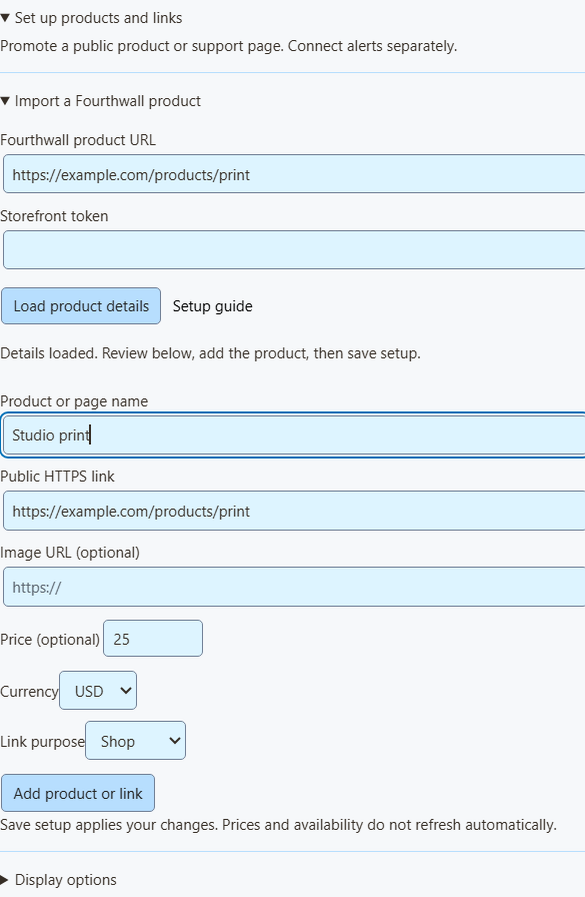

توصيل التنبيهات في 5 خطوات
These steps connect Fourthwall, Ko-fi and Buy Me a Coffee. For signed membership alerts, follow the Patreon steps below.
- افتح Monetization → Fourthwall, Ko-fi, Buy Me a Coffee & Patreon alerts واختر المزود.
- انقر على إعداد المستقبِل وفعّل التحكم في الإضافة عن بُعد عبر API.
- عُد إلى تحقيق الدخل وانقر نسخ رابط Webhook (Copy webhook URL).
- الصقه في إعدادات webhook لدى مزودك (الخطوات أدناه).
- أبقِ Social Stream Ninja قيد التشغيل.

معاينة تنبيه نموذجي يعرض المظهر فقط. لا يؤثر في الإجماليات أو Event Flow أو webhook الخاص بك.
لـ NinjaBacker وThrone وAmazon وeBay: راجع دليل تحقيق الدخل. لـ Shopify: راجع إعداد Shopify.
Fourthwall
- في Fourthwall، افتح الإعدادات (Settings) ← للمطورين (For Developers) ← Webhooks.
- أنشئ webhook والصق رابط Fourthwall من SSN.
- حدد الأحداث التي تريدها (راجع الجدول).
- احفظ وأبقِ SSN قيد التشغيل.
| حدث Fourthwall | يظهر بوصفه |
|---|---|
ORDER_PLACED | عملية شراء. تظل تضيف قيمة التبرع للتوافق مع الإعدادات القديمة. |
GIFT_PURCHASE | هدية. |
DONATION | تبرع. |
SUBSCRIPTION_PURCHASED | عضوية جديدة. |
لا تضيف طلبات بطاقات الهدايا قيمتها مرتين. يتم تجاهل الأحداث التجريبية.
Ko-fi
- افتح Ko-fi Webhooks.
- الصق رابط Ko-fi من SSN في رابط Webhook واحفظ.
- أبقِ SSN قيد التشغيل.
تستخدم الإكراميات العامة والعضويات وطلبات المتجر والتكليفات كلها هذا الرابط الواحد. تُستبعد الدفعات الخاصة. تظهر طلبات المتجر والتكليفات كمشتريات ولا تُضاف إلى إجماليات التبرع. لا يبلغ Ko-fi عن العضويات الملغاة.
Buy Me a Coffee
- في لوحة تحكم المنشئ، افتح التكاملات (Integrations) واختر Webhook جديد (New webhook).
- سمّه والصق رابط Buy Me a Coffee من SSN.
- حدد الأحداث التي تريدها (راجع الجدول).
- احفظ واترك الإرسال مفعّلاً. إذا فشل شيء، راجع سجل الإرسال هناك.
| الحدث | يظهر بوصفه |
|---|---|
donation.created | تبرع. |
extra_purchase.created | عملية شراء. |
commission_order.created | عملية شراء. |
wishlist_payment.created | مساهمة في هدية. |
membership.started | إعلان عضوية جديدة (وليس رسماً منفصلاً). |
تبقى الملاحظات المخفية والداعمون المجهولون مخفيين. اختبارات لوحة التحكم (live_mode: false) يتم تجاهلها. لا تقلل المبالغ المستردة الإجماليات.
Patreon chat and new pledges
Use Standard capture for chat and connect a webhook for new-pledge alerts. You can use either on its own or both together.
Capture chat
In SSApp, add a Patreon source in Standard mode, sign in with an account that can access the chat, and open the event or chat page. With the browser extension, enable Patreon capture and open that page in your browser. Keep the chat open and SSN on; new messages appear in your dock, while existing history is skipped.
Connect new-pledge alerts
- افتح Monetization → Fourthwall, Ko-fi, Buy Me a Coffee & Patreon alerts، اختر Patreon، ثم انقر نسخ رابط Webhook (Copy webhook URL). In SSApp, your Patreon source's Set up Patreon alerts menu item opens the same panel.
- Sign in to the creator account whose pledges you want to receive. Open Patreon webhook settings, create a webhook using the copied URL, and enable New pledge (
members:pledge:create). - Copy that webhook's signing secret into SSN's signing-secret field. Turn on Enable Patreon alerts وانقر حفظ الإعداد (Save setup). Keep SSN running and switched on to display incoming pledges; the Patreon chat page does not need to stay open for these alerts.
- Open your dock or multi-alerts overlay using the same SSN session and password. Keep subscriber alerts enabled and allow the Patreon source. For automation, use Event Flow's New Subscriber trigger with Patreon محدداً.
Alerts show new pledges from the time you enable them. The tier and pledge amount appear when Patreon supplies them; hidden names remain Anonymous. Pledges do not increase donation totals. Free memberships, gifts, trials, declined/former memberships, upgrades, cancellations and recurring charges do not generate new-pledge alerts.
Patreon alerts use their own receiver; you do not need to enable remote API control of the extension. To show them in OBS, use your multi-alerts link or the Monetization activity-alert view. Patreon pledge alerts do not require an enabled product showcase.
Closing SSN or turning SSN off keeps pending pledges for up to seven days. Disabling Patreon alerts and saving clears the backlog and stops queuing new pledges. Disconnect removes the receiver; also remove its old webhook in Patreon before creating another connection.
Check the connection
معاينة تنبيه نموذجي checks the appearance without sending a webhook or firing Event Flow actions. To check delivery from Patreon, use Send Test on your webhook in Patreon's dashboard, then check SSN's status and last-event time. Dashboard tests can trigger alerts and Event Flow actions when the sample qualifies as a new pledge.
Verified event received; no eligible new pledge means the signature was accepted, but the event did not qualify for an alert. A dashboard sample with an old pledge date is skipped. Keep the members:pledge:create trigger enabled to receive new pledges after setup.
If Patreon reports 401 / Invalid signature, copy the complete signing secret from that same webhook, paste it into SSN, and save again. If SSN remains waiting for an event, check the webhook URL and selected trigger in Patreon. Keep the webhook URL and signing secret private.
استيراد منتج Fourthwall
- في Fourthwall، انتقل إلى الإعدادات (Settings) ← للمطورين (For Developers) وأنشئ رمز Storefront. لا تستخدم مفتاح API للمسؤول.
- في SSN، افتح روابط المنتجات والدعم (Products & support links) ← إعداد المنتجات والروابط (Set up products and links) ← استيراد منتج Fourthwall (Import a Fourthwall product).
- الصق الرابط العام للمنتج والرمز. انقر تحميل تفاصيل المنتج (Load product details).
- تحقّق من الاسم والصورة والسعر والرابط. يجب أن ينتمي الرابط إلى المتجر نفسه الذي يخصه الرمز.
- اختر الغرض: تسوّق أو هدية أو دعم أو انضمام.
- انقر على إضافة منتج أو رابط (Add product or link)، فعّل روابط المنتجات والدعم (Products & support links)، ثم انقر حفظ الإعداد (Save setup).

ما الذي يفعله الاستيراد
- يحمّل منتجاً عاماً ومتاحاً واحداً في كل مرة.
- يحدد الرمز المتجر الذي يتم البحث فيه. يُستخدم مرة واحدة ثم يُمسح. لا يُحفظ ولا يُرسل إلى التراكبات أبداً.
- إذا كانت للخيارات أو الحزم أسعار مختلفة، يُترك السعر فارغاً.
- إنها لقطة ثابتة. لا تتحدث الأسعار والمخزون والصور تلقائياً؛ أعد الاستيراد أو عدّلها عند تغيرها.
- يمكنك حفظ ما يصل إلى 20 منتجاً. تؤدي إضافة المنتج نفسه مرة أخرى إلى إنشاء نسخة ثانية.
عرض المنتجات ورموز QR على البث
يمكنك أيضاً إضافة أي رابط عام يدوياً، مثل Shopify أو Tiltify أو Patreon. لا يؤدي ذلك إلى توصيل تنبيهات الدفع.
- ضمن تراكب OBS لـ، اختر روابط المنتجات والدعم (Products & support links).
- افتح خيارات رابط التراكب واختر عرض التراكب: عرض المنتجات فقط، أو بطاقة الدعم فقط، أو تنبيهات النشاط فقط، أو العرض والتنبيهات.
- انقر على نسخ رابط OBS وأضفه إلى OBS بوصفه مصدر المتصفح. ابدأ بمقاس 800 × 600. استخدم مصدراً واحداً لكل عرض.
- في خيارات العرض، وثبّت المنتج الأول أو دوّر المنتجات، ثم فعّل إظهار رمز QR.
- امسح رمز QR بهاتفك وأنت تنظر إلى التخطيط النهائي في OBS.

التنبيهات والتنبيهات المتعددة وEvent Flow
- يعرض معرض المنتجات صورة المنتج، أما بطاقة الدعم الأصغر فلا تعرضها.
- تعمل تنبيهات النشاط بصورة مستقلة، ولا تعرض أبداً رمز QR لمنتج غير ذي صلة.
- Multi-alerts and the activity feed work with the same session, with no product list needed. The Monetization activity view needs the product list turned on for other providers; Patreon pledge alerts display independently.
- في Event Flow، يظل مشغّل التبرع يشمل الصفوف التي تحتوي على
hasDonation. استخدم نوع الحدث للمشتريات أو الهدايا المكتملة. راجع تعيين الأحداث.
للتبديل بين المنتجات مباشرة أو مشاركة رابط عرض واحد: راجع التحكم المباشر بالمنتجات.
إذا لم يظهر شيء
| المشكلة | جرّب هذا |
|---|---|
| المستقبِل معطّل | For Patreon, turn on Enable Patreon alerts وانقر حفظ الإعداد (Save setup). For Fourthwall, Ko-fi and Buy Me a Coffee, turn on التحكم في الإضافة عن بُعد عبر API. |
| غير متصل | أبقِ SSN قيد التشغيل وتحقّق من الإنترنت. هذا اتصال SSN وليس اتصال مزودك. |
| لم يصل أي حدث | تحقّق من المزود الذي اخترته والرابط وإعدادات webhook لدى المزود. |
| تم تجاهل الحدث | تُستبعد الاختبارات والدفعات الخاصة والأحداث غير المدعومة والمبالغ غير الصالحة. |
| وصل الحدث، لكن التراكب لم يظهر | تحقّق من الجلسة وكلمة المرور والمرشحات وقواعد SSN وظهور مصدر OBS. معظم المشتريات ليست تبرعات. |
| تظهر التنبيهات مرتين | لا ترسل الدفعة نفسها عبر المزود وخدمة أخرى معاً. |
| فشل الاستيراد | تحقّق من رابط المنتج ورمز Storefront ومن أن المنتج عام ومتاح. يمكنك دائماً إدخاله يدوياً. |
This is a live alert feed, not an order record. Use your provider's dashboard for payments, refunds, and shipping. Tiltify alerts aren't supported yet.